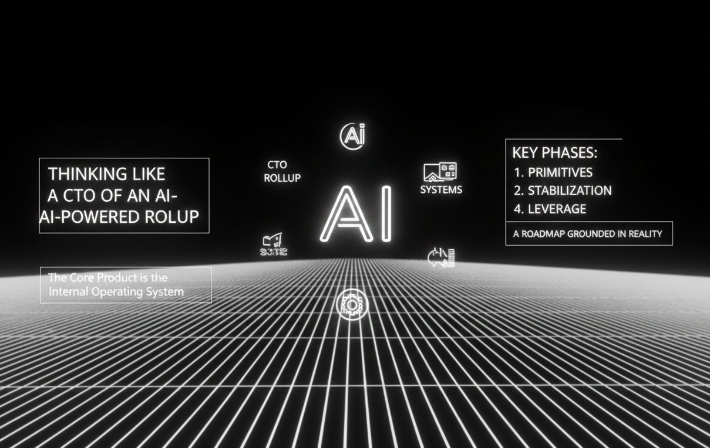

Thinking Like a CTO of an AI Powered Rollup
I'm a product engineer thinking about making the leap into a CTO role at an AI powered rollup. That's not just a title change it's a shift in how I think about technology, product, people, and risk. This isn't a pure software startup, and it isn't traditional private equity either. It's owning real businesses while trying to build a compounding technology advantage inside them.
The model has real momentum. Reuters reported that Thrive backed Crete plans to invest more than $500 million acquiring and modernizing accounting firms with AI tooling.[1] General Catalyst has described a strategy of buying service providers and applying AI to expand their capacity and outcomes, rather than merely selling software into slow moving markets.[2] In parallel, established PE platforms are building centralized AI programs; Vista has publicly framed its "Agentic AI Factory" as a way to deploy agentic workflows across its portfolio at scale.[3]
I'm skeptical anyway. Rollups are hard. Culture is fragile. AI can commoditize work faster than it creates durable pricing power, and the "two businesses in one" problem is real: you're operating a services company while trying to build a platform that behaves like software. But I'm bullish on the discipline. Ownership plus workflow access plus compounding data is a rare setup for measurable productivity gains. If this works, it won't be because of a chatbot. It will be because of systems.
The real product is the operating system
The core product of an AI rollup is not a feature. It's the internal operating system that standardizes how work happens across the portfolio. The operating system is a thin platform above whatever tools each acquired company already runs. It defines reality (data), defines work (workflows), and then uses AI inside those boundaries.
This is why serious players keep describing platforms rather than point tools. General Catalyst's services thesis emphasizes building a system that improves service delivery e2e.[2] Vista's approach emphasizes reusable agentic capability across many companies, which only works if the underlying interfaces and controls are consistent.[3] Compounding requires shared rails.
Phase 0: Don't break revenue
The first priority post close is stability. Don't break the revenue engine. Instrument the workflows, measure cycle time and rework, and ship assistive wins that reduce cognitive load immediately: better search, faster drafting, clean extraction, simpler handoffs. If operators don't feel helped early, adoption rots quietly and the platform becomes a mandate instead of a partner.
Phase 0.5: Build the core product
Most roadmaps jump straight to "standardize the work objects." I think there's a phase that has to come first: building the core platform itself. In the first six to eight weeks, the job is to lay down primitives you won't regret later.
It starts with a canonical data model: customers, contracts, work units (cases/jobs/tickets), deliverables, billing, and renewals. Without shared definitions of reality, AI becomes guesswork and reporting becomes politics. On top of that sits workflow orchestration: intake, triage, assignment, execution, QA, delivery, billing, renewal—plus the exception paths that actually dominate real operations. AI becomes safe when it operates inside workflows, not around them.
The AI layer should begin narrow and boring. Retrieval must be grounded in the systems of record. Extraction and drafting must be tied to specific workflow steps. Action must be gated, reversible, and logged. This is also where you build the trust layer: an "AI change log" that shows what happened, why it happened, and how to undo it. If you can't audit it, you can't scale it.
Finally, the platform needs an integration and onboarding kit. Rollups live or die on time to value after acquisition. If each new company takes months to map data, reconcile tooling, and rebuild workflows, the economics break. The platform has to make onboarding repeatable.
Phase 1-4: Standardize, automate, compound
Once the core product exists, the roadmap becomes more familiar. Phase 1 is standardization across acquisitions: shared objects, shared metrics, shared visibility. Phase 2 is workflow first automation: triage, document generation, QA checks, billing support high volume tasks where consistency matters. Phase 3 is the integration flywheel: new acquisitions onboard faster and cross sell becomes data driven instead of ad hoc. Phase 4 is the long game: decide whether the platform remains internal or becomes a product line.
From internal platform to external leverage
There's a strategic opportunity if the internal product is real. Once it runs production workflows and measurably improves outcomes, you can begin to offer it as a platform—not as a generic SaaS tool, but as a vertical operating system with implementation playbooks. That's the "Palantir" analogy: software plus a deployment posture that handles messy reality.
The order matters. You don't start with a pricing page. You start by proving outcomes internally, then productizing repeatability, then extending to partners who want the system without being acquired. Done well, you become the AI partner that doesn't just advise—you ship working infrastructure.
Empathy and abundance are not soft ideas
This model only scales if people trust it. Trust doesn't come from "AI strategy." It comes from daily experience: the system makes work easier, not harder; it's a partner, not a supervisor; it keeps humans in control; it respects craft and judgment. The abundance mindset has to be real: more capacity, better quality, healthier growth. Even the most AI forward rollup narratives emphasize augmenting professionals rather than replacing them, because adoption is the bottleneck.[1]
The irony is that empathy is not just moral, it's practical. Voluntary adoption is the only asset that really compounds.
Hiring: who we need, and what's on the other side
An AI rollup needs builders who are comfortable with messy systems and production constraints. We need product engineers who translate operations into primitives, integration and workflow engineers who can make multiple systems behave like one, applied AI engineers who care about grounding and auditability, and operators who are respected by the field and can turn tribal knowledge into playbooks. If the platform team behaves like "we're here to fix you," we lose. We need people who can partner.
The reward isn't just equity, though that matters. It's leverage. If you help build the canonical model, the workflow engine, and the safe AI runtime, you're not shipping features you're building the machine that turns fragmented businesses into coherent platforms. That skill set is rare. And if the thesis holds, the payoff is bigger than money: proof that AI can scale work without dehumanizing it.
Closing thought
I'm skeptical of AI powered rollups as a buzzword. I'm bullish on the discipline. If this works, it won't be because AI is magical. It will be because we were disciplined about systems, honest about risk, and serious about partnering with the people who actually do the work.